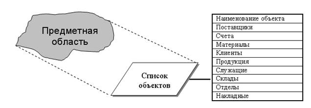
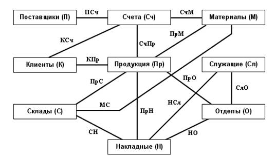
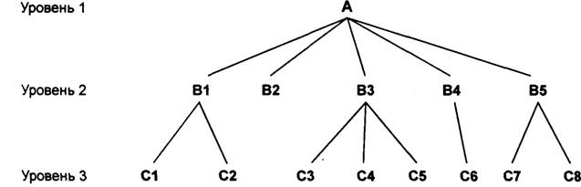
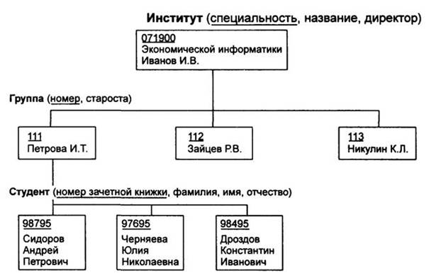
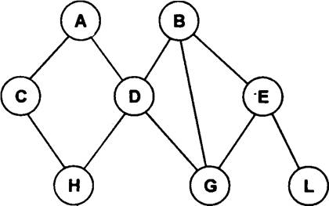
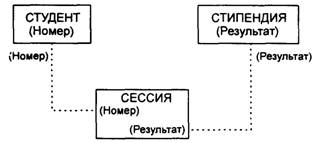

электронный
ресурс по учебной дисциплине 1-58 01 01 - "ИНЖЕНЕРНО-ПСИХОЛОГИЧЕСКОЕ ОБЕСПЕЧЕНИЕ ИНФОРМАЦИОННЫХ ТЕХНОЛОГИЙ".
|
||
| Оглавление | Программа | Теория | Практика| Контроль знаний | Об авторах | ||
|
Оглавление
Практическая работа №2 Разработка реляционной базы данных. 1. Цель работы Получить практические навыки по созданию базы данных. 2. Учебный материал по практической База данных (БД) - именованная совокупность данных, отражающая состояние объектов и их отношений в рассматриваемой предметной области. Из определения следует, что база данных является проекцией предметной области, ее отражением. В этом отражении мы видим объекты предметной области, их состояние и отношения между ними. Отсюда следует, что для любой предметной области, для любой сферы может быть создана база данных, отражающая ее состояние. Одна из задач курса как раз научиться строить такие проекции, такие отражения, а также создавать средства для работы с ними. Следует отметить, что, не смотря на то, что базу данных можно назвать отражением или проекцией предметной области, нельзя считать, что эта проекция полная. Речь может идти только об отражении каких-либо частей предметной области. Итак, база данных состоит из объектов, информации об их состоянии и отношений между ними. Объекты и информация о них. Под объектом понимается некоторое целое (явление, понятие, предмет, процесс, действие), обладающее рядом неотъемлемых свойств (качеств). Пусть имеется некоторая предметная область, для которой требуется построить проекцию-отражение, т.е. базу данных. В связи с тем, что база данных является проекцией-отображением предметной области, для ее создания необходимо выделить из предметной область некоторые объекты. Свойства и состояния этих объектов будут отражаться в базе данных  Рисунок 1 – проекция – отражение предметной области. Кроме самих объектов, существуют также и отношения между ними. Отношение между объектами - взаимосвязь объектов предметной области. Например, отношение между объектами "Поставщики" и "Материалы" может иметь следующее значение: - если задан поставщик, то можно найти все поставляемые им материалы; - если задан материал, то можно найти всех поставщиков данного материала. Отобразим объекты и отношения между ними на рисунке 2:  Рисунок 2 – Объекты и отношения между ними Как видно из представленной схемы, объекты предметной области связаны между собой посредством отношений. Отношения, подобно основным объектам, являются частью данных, поэтому они также являются элементами базы данных. Значение отношений, представленных на схеме приведены в таблице 1. Таблица 1 – значение отношений, представленных на схеме
Отношения, показанные в таблице и на рисунке, являются бинарными, т.к. связывают всего два объекта. В общем случае из нескольких бинарных отношений можно составить n-арное отношение. Отношения можно также рассматривать как специальный тип объектов, задача которых связывать основные объекты базы данных. Почему необходимо использовать базы данных Преимущества использования баз данных по сравнению с традиционным бумажным методом содержания информации очевидны. Главным образом они сводятся к следующему: 1.Компактность. Нет необходимости в больших помещениях, хранилищах, архивах. 2.Скорость. Компьютер обрабатывает данные практически мгновенно (по сравнению с человеком). Это означает, что все операции поиска, изменения, группировки данных и формирования отчетов будут происходить во много раз быстрее, чем при традиционной технологии работы с информацией на бумажных носителях. 3.Низкие трудозатраты. Исключается утомительная работа по перебору бумажных документов и выборки необходимой информации из них. Сокращение этой механической работы высвобождает большое количество времени на решение других задач. 4.Оперативность. Время между запросом необходимой информации и ее получением снижается в десятки раз, таким образом можно говорить о более быстром, по сравнению с традиционной бумажной технологией, получении последней информации. 5.Возможность неоднократного использования информации. Информация, введенная одним пользователем, становится доступной для других. Эта информация может быть использована неограниченное число раз различными пользователями для решения своих задач. Виды моделей данных Ядром любой базы данных является модель данных. Модель данных представляет собой множество структур данных, ограничений целостности и операций манипулирования данными. С помощью модели данных могут быть представлены объекты предметной области и взаимосвязи между ними. Модель данных — это совокупность структур данных и операций их обработки. СУБД основывается на использовании иерархической, сетевой или реляционной модели, на комбинации этих моделей или на некотором их подмножестве. Рассмотрим три основных типа моделей данных: иерархическую, сетевую и реляционную. Иерархическая модель данных Иерархическая структура представляет совокупность элементов, связанных между собой по определенным правилам. Объекты, связанные иерархическими отношениями, образуют ориентированный граф (перевернутое дерево), вид которого представлен на рисунке 3. К основным понятиям иерархической структуры относятся: уровень, элемент (узел), связь. Узел — это совокупность атрибутов данных, описывающих некоторый объект. На схеме иерархического дерева узлы представляются вершинами графа. Каждый узел на более низком уровне связан только с одним узлом, находящимся на более высоком уровне. Иерархическое дерево имеет только одну вершину (корень дерева), не подчиненную никакой другой вершине и находящуюся на самом верхнем (первом) уровне. Зависимые (подчиненные) узлы находятся на втором, третьем и т.д. уровнях. Количество деревьев в базе данных определяется числом корневых записей. К каждой записи базы данных существует только один (иерархический) путь от корневой записи. Например, как видно из рисунке 3, для записи С4 путь проходит через записи АиВЗ.  Рисунок 3 - Графическое изображение иерархической структуры БД Пример, представленный на рисунке 4, иллюстрирует использование иерархической модели базы данных.  Рисунок 4 - Пример иерархической структуры БД Для рассматриваемого примера иерархическая структура правомерна, так как каждый студент учится в определенной (только одной) группе, которая относится к определенному (только одному) институту. Сетевая модель данных В сетевой структуре при тех же основных понятиях (уровень, узел, связь) каждый элемент может быть связан с любым другим элементом. На рисунке 5 изображена сетевая структура базы данных в виде графа. Примером сложной сетевой структуры может служить структура базы данных, содержащей сведения о студентах, участвующих в научно-исследовательских работах (НИРС). Возможно участие одного студента в нескольких НИРС, а также участие нескольких студентов в разработке одной НИРС. Единственное отношение представляет собой сложную связь между записями в обоих направлениях.  Рисунок 5 - Графическое изображение сетевой структуры Реляционная модель данных Понятие реляционный (англ. relation — отношение) связано с разработками известного американского специалиста в области систем баз данных Е. Кодда. Эти модели характеризуются простотой структуры данных, удобным для пользователя табличным представлением и возможностью использования формального аппарата алгебры отношений и реляционного исчисления для обработки данных. Реляционная модель ориентирована на организацию данных в виде двумерных таблиц. Каждая реляционная таблица представляет собой двумерный массив и обладает следующими свойствами: • каждый элемент таблицы — один элемент данных; • все столбцы в таблице однородные, т.е. все элементы в столбце имеют одинаковый тип (числовой, символьный и т.д.) и длину; • каждый столбец имеет уникальное имя; • одинаковые строки в таблице отсутствуют; • порядок следования строк и столбцов может быть произвольным. Реляционной таблицей можно представить информацию о студентах, обучающихся в вузе (рисунок 6). Таблица 2 - Пример реляционной таблицы
Отношения представлены в виде таблиц, строки которых соответствуют кортежам или записям, а столбцы — атрибутам отношений, доменам, полям. Поле, каждое значение которого однозначно определяет соответствующую запись, называется простым ключом (ключевым полем). Если записи однозначно определяются значениями нескольких полей, то такая таблица базы данных имеет составной ключ. Чтобы связать две реляционные таблицы, необходимо ключ первой таблицы ввести в состав ключа второй таблицы (возможно совпадение ключей); в противном случае нужно ввести в структуру первой таблицы внешний ключ — ключ второй таблицы. На рисунке 6 показан пример реляционной модели, построенной на основе отношений: СТУДЕНТ, СЕССИЯ, СТИПЕНДИЯ.  Рисунок 6 - Пример реляционной модели СТУДЕНТ {Номер, Фамилия, Имя, Отчество, Пол, Дата рождения. Группа); СЕССИЯ (Номер, Оценка!, Оценка2, ОценкаЗ, Оценка4, Результат); СТИПЕНДИЯ (Результат, Процент). Таблицы СТУДЕНТ И СЕССИЯ имеют совпадающие ключи (Номер), что дает возможность легко организовать связь между ними. Таблица СЕССИЯ имеет первичный ключ Номер и содержит внешний ключ Результат, который обеспечивает ее связь с таблицей СТИПЕНДИЯ. Общая характеристика реляционной модели данных Основы реляционной модели данных были впервые изложены в статье Е.Кодда в 1970 г. Эта работа послужила стимулом для большого количества статей и книг, в которых реляционная модель получила дальнейшее развитие. Наиболее распространенная трактовка реляционной модели данных принадлежит К.Дейту. Согласно Дейту, реляционная модель состоит из трех частей: ̶ Структурной части. ̶ Целостной части. ̶ Манипуляционной части. Структурная часть описывает, какие объекты рассматриваются реляционной моделью. Постулируется, что единственной структурой данных, используемой в реляционной модели, являются нормализованные n-арные отношения. Целостная часть описывает ограничения специального вида, которые должны выполняться для любых отношений в любых реляционных базах данных. Это целостность сущностей и целостность внешних ключей. Манипуляционная часть описывает два эквивалентных способа манипулирования реляционными данными - реляционную алгебру и реляционное исчисление. Типы данных Любые данные, используемые в программировании, имеют свои типы данных. Важно! Реляционная модель требует, чтобы типы используемых данных были простыми. Для уточнения этого утверждения рассмотрим, какие вообще типы данных обычно рассматриваются в программировании. Как правило, типы данных делятся на три группы: · Простые типы данных. · Структурированные типы данных. · Ссылочные типы данных. Простые, или атомарные, типы данных не обладают внутренней структурой. Данные такого типа называют скалярами. К простым типам данных относятся следующие типы: · Логический. · Строковый. · Численный. Различные языки программирования могут расширять и уточнять этот список, добавляя такие типы как: · Целый. · Вещественный. · Дата. · Время. · Денежный. · Перечислимый. · Интервальный. · И т.д.… Конечно, понятие атомарности довольно относительно. Так, строковый тип данных можно рассматривать как одномерный массив символов, а целый тип данных - как набор битов. Важно лишь то, что при переходе на такой низкий уровень теряется семантика (смысл) данных. Если строку, выражающую, например, фамилию сотрудника, разложить в массив символов, то при этом теряется смысл такой строки как единого целого. Структурированные типы данных предназначены для задания сложных структур данных. Структурированные типы данных конструируются из составляющих элементов, называемых компонентами, которые, в свою очередь, могут обладать структурой. В качестве структурированных типов данных можно привести следующие типы данных: · Массивы · Записи (Структуры) С математической точки зрения массив представляет собой функцию с конечной областью определения. Общим для структурированных типов данных является то, что они имеют внутреннюю структуру, используемую на том же уровне абстракции, что и сами типы данных. Это объясняется следующим образом. При работе с массивами или записями можно манипулировать массивом или записью и как с единым целым (создавать, удалять, копировать целые массивы или записи), так и поэлементно. Для структурированных типов данных есть специальные функции - конструкторы типов, позволяющие создавать массивы или записи из элементов более простых типов. Работая же с простыми типами данных, например с числовыми, мы манипулируем ими как неделимыми целыми объектами. Чтобы "увидеть", что числовой тип данных на самом деле сложен (является набором битов), нужно перейти на более низкий уровень абстракции. На уровне программного кода это будет выглядеть как ассемблерные вставки в код на языке высокого уровня или использование специальных побитных операций. Ссылочный тип данных (указатели) предназначен для обеспечения возможности указания на другие данные. Указатели характерны для языков процедурного типа, в которых есть понятие области памяти для хранения данных. Ссылочный тип данных предназначен для обработки сложных изменяющихся структур, например деревьев, графов, рекурсивных структур. Типы данных, используемые в реляционной модели Собственно, для реляционной модели данных тип используемых данных не важен. Требование, чтобы тип данных был простым, нужно понимать так, что в реляционных операциях не должна учитываться внутренняя структура данных. Конечно, должны быть описаны действия, которые можно производить с данными как с единым целым, например, данные числового типа можно складывать, для строк возможна операция конкатенации и т.д. С этой точки зрения, если рассматривать массив, например, как единое целое и не использовать поэлементных операций, то массив можно считать простым типом данных. Более того, можно создать свой, сколь угодно сложных тип данных, описать возможные действия с этим типом данных, и, если в операциях не требуется знание внутренней структуры данных, то такой тип данных также будет простым с точки зрения реляционной теории. 3. Порядок выполнения работы: 1. Ознакомиться с учебными материалами. 2. В соответствии с индивидуальным заданием от преподавателя разработать структуру базы данных, создать и заполнить таблицы, построить схему данных.(можно на бумаге) 3. Продемонстрировать результат работы преподавателю. 4. Согласовать с преподавателем содержание отчёта и оформить его.
|
| (С) БГУИР |